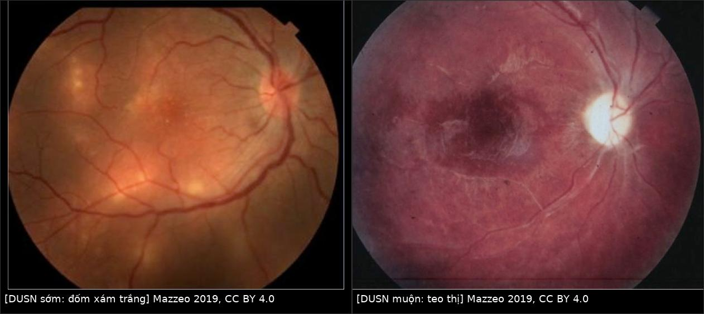
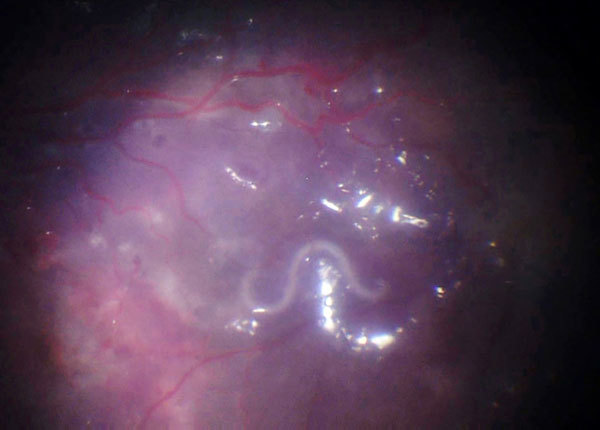
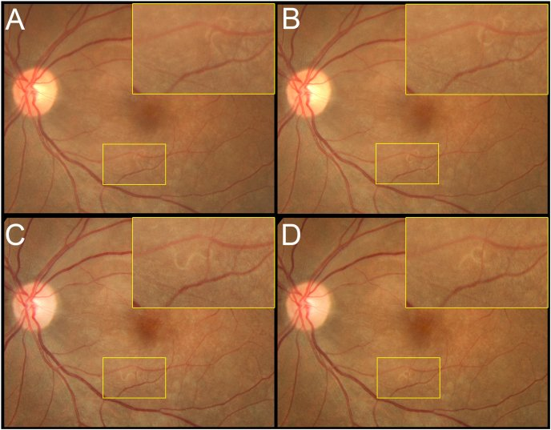
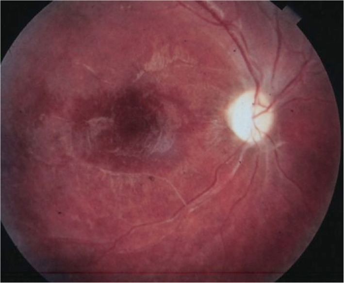
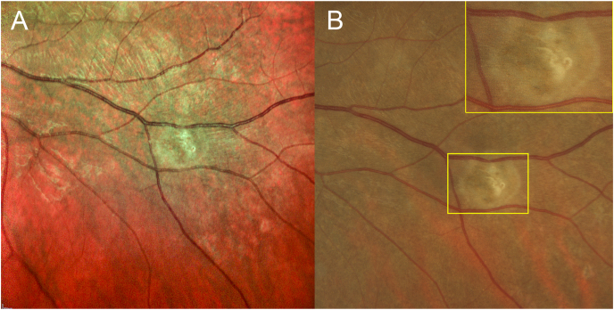

425 — DUSN (viêm thần kinh võng mạc cấp lan toả một bên) & ấu trùng di động dưới võng mạc / Diffuse unilateral subacute neuroretinitis (DUSN)
Tags: pattern:viem-vong-mac pattern:ton-thuong-ngoai-vong-mac pattern:teo-thi pattern:mat-mot-ben vung:vong-mac vung:dich-kinh vung:mat vung:tre-em protocol:FA protocol:ICG protocol:OCT protocol:OCT-A protocol:ERG protocol:laser protocol:albendazole
Mức chắc chắn (certainty): tổng hợp y văn (literature synthesis) — bài tổng quan 20 ca/121 ca của Mazzeo 2019 (PMC6934636), đoàn hệ SD-OCT 8 mắt (PMC3155787) và 10 mắt (PMC4051808), cùng 4 ca nguyên văn có ảnh (PMC5324813, PMC8170075, PMC12178403, PMC6157124). Câu nào là suy luận được ghi [suy luận].
Vì sao bài này quan trọng: 466 đã đặt DUSN vào ma trận của u hạt toxocariasis, nhưng chỉ ở mức một hàng phân biệt. DUSN là bệnh cảnh riêng: một bên, trẻ/người trẻ khoẻ mạnh, viêm dịch kính + đốm xám trắng ngoại võng mạc di chuyển theo con giun, rồi teo thị không hồi phục. Chốt chẩn đoán duy nhất là nhìn thấy ấu trùng — nhưng chỉ thấy ở 25–40% ca (PMC6934636; 121 ca của Garcia Filho: ~40%). Nghĩa là 60–75% ca không có giun để đốt laser, và đó là lý do phải phân biệt rõ DUSN xác định (confirmed) vs DUSN giả định (presumed) trước khi quyết định albendazole.
1. Tổng quan bệnh học – cơ chế hình ảnh
- Bệnh học (pathology): ấu trùng giun tròn (nematode) di chuyển trong khoảng dưới võng mạc của một mắt. Tác nhân được đề xuất nhiều nhất: Toxocara canis, Baylisascaris procyonis (gấu mèo) và Ancylostoma caninum (giun móc chó); không có một loài duy nhất — DUSN được xem là kết cục chung của nhiều loài giun, nên hình thái và dịch tễ khác nhau theo vùng (PMC6934636).
- Kích thước ấu trùng là dấu vết dịch tễ: giun nhỏ 400–700 µm ở đông nam Hoa Kỳ và Nam Mỹ; giun lớn 1.500–2.000 µm ở bắc Trung Tây Hoa Kỳ; khoảng chung 400–2.000 µm. Giun lớn thường để lại dải sắc tố RPE thô ráp dọc đường đi, giun nhỏ để lại sẹo teo hắc–võng mạc khu trú (Gass & Braunstein, trong PMC6934636).
- TẠI SAO tổn thương "di chuyển" và "biến mất" (evanescent): đốm xám-trắng không phải mô giun mà là phản ứng viêm quanh vị trí giun đang đứng. Giun bò sang vùng khác → ổ viêm cũ mờ đi, ổ mới mọc lên ở nơi khác. Vì vậy chụp lại sau vài ngày là một "nghiệm pháp hình ảnh": tổn thương đổi chỗ = bằng chứng gián tiếp của ấu trùng đang di động.
- TẠI SAO mất thị lực nặng và không hồi phục: hai cơ chế cộng lại — (1) độc tố/dịch tiết của giun phá lớp võng mạc ngoài (tế bào quang thụ + biểu mô sắc tố), (2) phản ứng miễn dịch của vật chủ (bạch cầu ái toan, đại thực bào, tăng sinh thần kinh đệm) lan toàn bộ các lớp võng mạc → mất tế bào hạch rồi teo thị. Đây là lý do bệnh được gọi là "bệnh võng mạc do giun nhiễm độc – tự miễn" (toxic autoimmune nematode retinopathy).
- TẠI SAO OCT là chốt cơ chế: tổn thương ở lớp võng mạc ngoài trước, nên OCT thấy mất/gián đoạn dải ellipsoid (EZ) và dải xen kẽ (IZ), tăng hồi âm khu trú xuyên võng mạc tại nơi giun đứng, và đường hầm dưới võng mạc (Garcia's sign) — khoang trống/hyperreflective line nơi giun đã bò qua. Về muộn: mỏng toàn bộ các lớp võng mạc.
- Số đo (8 mắt DUSN, Cirrus SD-OCT; PMC3155787): RNFL trung bình 80,25 µm ở mắt bệnh vs 104,75 µm ở mắt lành; CMT 205,5 vs 255,13 µm; giai đoạn muộn RNFL 74,83 µm vs giai đoạn sớm 96,5 µm — mỏng dần theo thời gian.
- Số đo (10 mắt, EDI-OCT; PMC4051808): mỏng võng mạc và RNFL có ý nghĩa (p = 0,004 và p = 0,002), nhưng độ dày hắc mạc KHÔNG khác (p = 0,262) — tổn thương thuộc võng mạc, dù hắc mạc có tham gia viêm trên ICG.
- TẠI SAO FA/ICG cho hình ảnh khác nhau: ổ viêm hoạt động chặn ánh huỳnh quang nền → giảm huỳnh quang (hypofluorescence) sớm, sau đó nhuộm (staining); về muộn, RPE mất sắc tố → khiếm khuyết cửa sổ (window defect). Trên ICG, các đốm tối giảm huỳnh quang phản ánh thâm nhiễm hắc mạc chặn thuốc nhuộm, và đốm còn tối ở thì muộn gợi tổn thương toàn chiều dày (PMC6934636).
- TẠI SAO ERG "âm" (negative ERG): tế bào lưỡng cực và võng mạc trong bị tổn thương → sóng b giảm nhiều hơn sóng a; ERG bất thường ngay cả giai đoạn sớm, trong khi EOG bình thường ở ~50% ca — tổ hợp ERG bất thường + EOG bình thường chỉ điểm bệnh biểu mô thần kinh, và ERG hiếm khi mất hoàn toàn (khác thoái hoá sắc tố võng mạc).
- TẠI SAO OCT-A có thể "bắt" được giun: giun không có hệ mạch → trên OCT-A không có tín hiệu dòng chảy. Một "khuyết" không tưới máu di chuyển giữa hai lần chụp là dấu hiệu gián tiếp rất mạnh; giun đã chết/nằm im có thể không thấy (PMC6934636, PMC5722164).
- Số liệu định lượng cốt lõi:
- Nhìn thấy ấu trùng: 25–40% ca (PMC6934636; PMC6157124 dẫn 25–40%); không thấy 60–75% (PMC8170075); loạt 121 bệnh nhân: ~40% (PMC6934636).
- Thị lực: giai đoạn sớm ~một nửa bệnh nhân < 20/200; giai đoạn muộn ≥ 80% ≤ 20/200 (PMC6934636).
- Tuổi: đa số < 20 tuổi, trẻ khoẻ mạnh, một bên (hiếm hai bên).
- Huyết thanh: ELISA T. canis dương 47,62% trong loạt 23 ca của Oréfice; 2 ca có giun sống lại ELISA âm — huyết thanh không dùng để loại trừ (PMC6934636).
2. Mẫu hình + chẩn đoán phân biệt theo vị trí và giai đoạn (gamut)
Câu hỏi trung tâm không phải "có viêm võng mạc không" mà "có con giun trong khoang dưới võng mạc không, và nó đang ở đâu".
- A. Giai đoạn SỚM — gamut theo tổn thương chính:
- Viêm dịch kính + phù đĩa thị một bên ("giả viêm thần kinh thị") → DUSN, viêm thần kinh thị thật, neuroretinitis do Bartonella, bệnh mèo cào.
- Đốm xám-trắng ngoại võng mạc rải rác một vùng → DUSN, MEWDS, APMPPE, viêm hắc mạc đa ổ (MFC), toxoplasmosis, toxocariasis.
- Viêm mạch võng mạc + xuất tiết quanh tĩnh mạch → DUSN, Behçet, sarcoid, Toxocara.
- B. Giai đoạn MUỘN — gamut "giả thoái hoá sắc tố / mạch máu":
- Mạch máu hẹp + teo thị + sắc tố lốm đốm MỘT BÊN → DUSN, thoái hoá sắc tố võng mạc một bên (unilateral RP), tắc mạch võng mạc cũ, bệnh võng mạc do xạ, chấn thương cũ.
- Sắc tố dạng "xương" (bone spicule) đối xứng hai bên + không viêm dịch kính → RP thật, không phải DUSN.
- C. Gamut theo VỊ TRÍ con giun (khi nhìn thấy): dưới võng mạc cạnh hoàng điểm (khó đốt laser vì sợ tổn thương hoàng điểm) · dưới võng mạc ngoại vi (vị trí lý tưởng để đốt) · trước võng mạc/trên màng giới hạn trong (ILM) · trong dịch kính · nhiều giun cùng mắt (ca trẻ 8 tuổi không đáp ứng điều trị, PMC6157124).
- D. Hai nhãn phải dùng đúng: DUSN xác định (confirmed) = có triệu chứng điển hình + nhìn thấy ấu trùng; DUSN giả định (presumed) = có triệu chứng điển hình nhưng không thấy ấu trùng. Chỉ nhãn confirmed mới có chỉ định đốt laser chắc chắn.
3. Bảng so sánh phân biệt (ma trận đối chiếu)
| Thực thể (entity) | Hình ảnh điển hình | Chốt vào (rule-in) | Chốt loại (rule-out) | Gợi ý xác nhận |
|---|---|---|---|---|
| DUSN xác định (confirmed) | Đốm xám-trắng ngoại võng mạc đổi vị trí giữa hai lần chụp; một sợi giun trắng di động dưới võng mạc | Nhìn thấy ấu trùng di động trong khoang dưới võng mạc/dịch kính | Không thấy giun sau nhiều lần khám → chuyển sang nhãn giả định | Soi đáy mắt giãn đồng tử + ảnh màu/UWF lặp lại; OCT qua tổn thương; đốt laser ngay khi thấy |
| DUSN giả định (presumed) | Một bên: viêm dịch kính nhẹ–vừa + đốm xám-trắng ngoại võng mạc + RPE lốm đốm; ERG âm | Bộ ba một bên + đốm di chuyển + ERG âm, loại trừ nguyên nhân khác | Có u hạt bờ rõ + dây co kéo → toxocariasis; hai bên + không viêm → MFC/RP | Albendazole 400 mg/ngày × 30 ngày; chụp lại 4–6 tuần |
| Toxocariasis nội nhãn (OLM) | U hạt bờ rõ thường ngoại vi (90% thái dương) + dây xơ co kéo tới đĩa thị; có thể bong võng mạc co kéo | Trẻ + u hạt + dây co kéo + ELISA Toxocara (+) | Không u hạt, có giun di động tự do → DUSN | ELISA huyết thanh Se 91%/Sp 90%; siêu âm/UBM khi đục môi trường |
| MEWDS | Nữ trẻ cận thị, một bên, nhiều đốm trắng mờ nhỏ quanh hoàng điểm, không viêm dịch kính | Đốm trắng + đĩa thị bình thường + tự khỏi 6–12 tuần | Viêm dịch kính rõ + teo thị tiến triển → DUSN | Theo dõi 4–8 tuần; OCT-A/FA nếu cần |
| APMPPE | Mảng placoid mức RPE, hai bên, thường sau nhiễm siêu vi | Placoid hai bên + tự khỏi, không đốm di động | Một bên + tổn thương đổi chỗ → DUSN | FA: giảm huỳnh quang sớm, nhuộm muộn |
| Viêm hắc mạc đa ổ (MFC) | Hai bên, sẹo đục lỗ (punched-out) + tân mạch hắc mạc, cận thị | Sẹo cũ hai bên + CNV | Một bên, không sẹo cũ → DUSN | FA/OCT-A; theo dõi tân mạch |
| Toxoplasmosis | Ổ viêm bờ nham nhở cạnh sẹo cũ, viêm dịch kính dày | Sẹo cũ + ổ hoạt động sát bờ | Không sẹo cũ, tổn thương lan theo đường giun → DUSN | IgG/IgM Toxoplasma; PCR dịch nội nhãn |
| Thoái hoá sắc tố võng mạc một bên | Sắc tố xương + mạch hẹp + teo thị, hai bên (một bên rất hiếm) | Hai bên + tiền sử gia đình + ERG giảm toàn bộ | Một bên + viêm dịch kính + ERG âm → DUSN | ERG/EOG, thị trường, di truyền |
| Viêm thần kinh thị | Phù đĩa thị đơn thuần, không đốm võng mạc ngoại vi | Đau khi liếc + RAPD + MRI hốc mắt | Có đốm ngoại võng mạc + viêm dịch kính → DUSN | MRI thần kinh thị; theo dõi |

Trái: đốm xám-trắng ngoại võng mạc rải rác (giai đoạn sớm). Phải: đĩa thị nhợt, mạch máu hẹp, sắc tố lốm đốm (giai đoạn muộn). Nguồn: Mazzeo TJMM et al., J Ophthalmic Inflamm Infect 2019 (PMC6934636), CC BY 4.0; ảnh ghép letterbox, không crop.Dấu hiệu chốt trên từng phương thức
- OCT: Garcia's sign — đường hầm dưới võng mạc; mất dải EZ/IZ tại ổ viêm; sợi giun là cấu trúc tăng hồi âm thẳng/cuộn nằm dưới võng mạc (không phải trong dịch kính).
- OCT-A: khuyết tín hiệu không có dòng chảy, di động giữa hai lần chụp (giun không có mạch).
- FA: giảm huỳnh quang ổ hoạt động → nhuộm; window defect muộn do mất RPE; rò đĩa thị.
- ICG: đốm tối do thâm nhiễm hắc mạc; còn tối thì muộn = tổn thương toàn chiều dày.
- ERG: sóng b giảm > sóng a ("negative ERG") — không đặc hiệu nhưng rất gợi ý khi một bên.
4. Protocol chụp + tiêu chuẩn điều trị
- Khám và chụp (thứ tự thực hành):
- Soi đáy mắt giãn đồng tử toàn bộ chu biên (giun hay ở ngoại vi) + đèn khe đánh giá viêm dịch kính.
- Ảnh màu/UWF từng mắt, chụp lặp lại cách 2–7 ngày ở ca nghi ngờ — mục tiêu là bắt tổn thương đổi chỗ hoặc con giun di chuyển.
- SD-OCT đường cắt qua hoàng điểm và qua ổ tổn thương (line raster 5–9 µm) tìm Garcia's sign, mất EZ, sợi giun.
- OCT-A (nếu có) để tìm khuyết dòng chảy di động; FA ± ICG khi chưa rõ chẩn đoán hoặc nghi tổn thương hắc mạc.
- ERG/EOG + thị trường (Goldmann/Humphrey 30°) — nền tảng theo dõi chức năng.
- Siêu âm B-scan khi môi trường đục (viêm dịch kính dày, đục thể thủy tinh); handheld OCT ở trẻ nhỏ không phối hợp [suy luận từ thực hành nhi].
- Protocol đốt laser (khi thấy giun): đốt ngay trong cùng buổi vì giun di động; đốt bao quanh con giun một quầng liên tục để chặn đường chạy; nếu giun sát hoàng điểm, dùng ánh sáng đèn khe/chiếu sáng nhẹ để "đuổi" giun ra ngoại vi rồi đốt (giun sợ ánh sáng); hệ laser dẫn đường + camera hồng ngoại (ví dụ Navilas 577s, bước sóng 577 nm) giúp định vị khi giun né ánh sáng nhìn thấy (PMC11294691). Không có thông số công suất/đường kính chuẩn trong y văn — mục tiêu là phản ứng đốt liên tục, bao trùm thân giun, tránh trung tâm hoàng điểm.
- Điều trị nội khoa khi KHÔNG thấy giun (DUSN giả định): albendazole 400 mg/ngày × 30 ngày, uống cùng bữa ăn béo (tăng hấp thu); loạt 12 bệnh nhân Brazil cải thiện thị lực/thị trường/viêm; 4 ca có giun nhìn thấy thì giun bất động trong những tuần đầu (PMC6934636). Liều 30 ngày suy từ phác đồ neurocysticercosis, chưa có thử nghiệm so sánh — bằng chứng mức thấp.
- Corticoid: dùng hỗ trợ khi viêm dịch kính dày (uống hoặc triamcinolone nội nhãn): tiêm triamcinolone làm môi trường trong hơn sau 10 ngày và giúp phát hiện giun để đốt laser (PMC4860977). Corticoid không thay thuốc diệt giun.
- Theo dõi: khám + ảnh + OCT lại 4–6 tuần, sau đó 3 tháng/lần trong năm đầu; mục tiêu là không còn ổ viêm mới, không còn giun di động, và thị lực/thị trường không xấu thêm. Tái phát/ổ mới sau laser → tìm giun thứ hai trước khi kết luận thất bại điều trị (ca trẻ 8 tuổi, PMC6157124).
flowchart TD
A[Nghi DUSN: một bên, viêm dịch kính, đốm xám trắng ngoại võng mạc] --> B[Ảnh màu/UWF + OCT + ERG, lặp lại 2-7 ngày]
B --> C{Nhìn thấy ấu trùng di động?}
C -->|Có| D[DUSN xác định: đốt laser ngay, quầng liên tục quanh giun]
C -->|Không| E[Khám lại nhiều lần, OCT-A, ảnh lặp lại]
E --> F{Vẫn không thấy giun?}
F -->|Không thấy| G[DUSN giả định: albendazole 400 mg/ngày x 30 ngày + corticoid nếu viêm nặng]
F -->|Thấy giun| D
D --> H[Theo dõi 4-6 tuần: ổ mới, giun mới, thị lực]
G --> H
H --> I{Còn ổ hoạt động hoặc giun mới?}
I -->|Có| B
I -->|Không| J[Theo dõi dài hạn: teo thị, thị trường, ERG]
5. Biến thể bình thường và cạm bẫy
- "Không thấy giun" KHÔNG loại trừ DUSN: giun chỉ thấy ở 25–40% ca; bỏ sót vì giun né ánh sáng, nằm ngoại vi, hoặc bị viêm dịch kính che. Phải khám nhiều lần, nhiều tư thế, chụp ảnh lặp lại.
- Giun chạy giữa lúc khám và lúc đốt laser: luôn chụp ảnh đánh dấu vị trí ngay trước khi đốt; dùng camera hồng ngoại/laser dẫn đường vì giun sợ ánh sáng nhìn thấy (PMC11294691).
- Chẩn đoán nhầm thành viêm thần kinh thị: phù đĩa thị một bên + giảm thị lực → corticoid đơn thuần mà không diệt giun; bệnh vẫn tiến triển và teo thị xảy ra. Luôn soi đáy mắt ngoại vi trước khi chốt "viêm thần kinh thị".
- Chẩn đoán nhầm giai đoạn muộn thành bệnh mạch máu/RP: một bên + viêm dịch kính nhẹ + ERG âm nghiêng về DUSN; hai bên + sắc tố xương + không viêm nghiêng về RP.
- Bạch cầu ái toan và huyết thanh không đáng tin: ELISA T. canis chỉ dương 47,62%; 2 ca có giun sống vẫn âm — không dùng kết quả âm để loại trừ.
- DUSN hiếm nhưng có thể HAI BÊN và có thể nhiều giun một mắt — ca trẻ 8 tuổi vẫn có ổ viêm mới dù đã laser + tẩy giun + ức chế miễn dịch (PMC6157124); đừng mặc định "một giun, một lần đốt là xong".
- Tổn thương có thể bị bỏ qua trên FA khi bị màng xơ/viêm che — FA bình thường không loại trừ; OCT qua vùng nghi ngờ là bổ sung bắt buộc.
- Sắc tố đường đi ≠ sắc tố bẩm sinh: dải sắc tố thô ráp theo đường bò của giun lớn dễ bị đọc thành "vết sẹo cũ" và bỏ qua bệnh đang hoạt động.
6. Tự lượng giá — Blind Quiz ngay trên trang tĩnh
Ca 1 — Bé trai 10 tuổi, giảm thị lực một mắt, đáy mắt có "con giun"

- Gợi ý lâm sàng: trẻ khoẻ mạnh, một mắt, không đau; đáy mắt có tổn thương trắng lốm đốm quanh hoàng điểm.
- Câu hỏi: Cấu trúc trắng dài khoảng 10 mm là gì? Nó nằm ở khoang nào? Đây là DUSN xác định hay giả định?
Bấm để hiện đáp án (findings + chẩn đoán)
- Dấu hiệu: một ấu trùng giun móc Ancylostoma ceylanicum dài ~10 mm, uốn cong, nằm trong khoảng dưới võng mạc; quanh nó có đốm trắng lốm đốm của phản ứng viêm ngoại võng mạc.
- Chẩn đoán: DUSN xác định (confirmed) — vì nhìn thấy ấu trùng; đốm trắng là phản ứng quanh giun, không phải mô giun.
- Xử trí: đốt laser bao quanh giun (nếu không sát hoàng điểm) ± albendazole; theo dõi ổ viêm mới.
- Nguồn ảnh: Poppert S et al., Emerg Infect Dis 2017;23(2) (PMC5324813) — phạm vi công cộng (US Government work).
Ca 2 — Nữ 37 tuổi, đột ngột giảm thị lực mắt trái còn đếm ngón tay

- Gợi ý lâm sàng: trước đó làm vườn, tiếp xúc phân gấu mèo; mắt phải 20/20; không đau.
- Câu hỏi: Bốn khung ảnh (A–D) chứng minh điều gì? Vì sao đây là bằng chứng mạnh hơn một ảnh tĩnh?
Bấm để hiện đáp án (findings + chẩn đoán)
- Dấu hiệu: cùng một sợi giun trắng thay đổi vị trí/hình dạng qua 4 khung — giun đang di chuyển trên bề mặt võng mạc (ILM); xung quanh có đốm trắng mờ.
- Vì sao mạnh hơn ảnh tĩnh: chuyển động loại trừ giả ảnh (phản xạ, sợi bông, mảnh dụng cụ) và xác nhận vật sống trong mắt — đúng định nghĩa DUSN xác định.
- Xử trí: laser dẫn đường + camera hồng ngoại đốt giun; albendazole hỗ trợ.
- Nguồn ảnh: Sodhi SK et al., Am J Ophthalmol Case Rep 2021 (PMC8170075), CC BY 4.0.
Ca 3 — Người trẻ, một mắt, đĩa thị nhợt và mạch máu hẹp

- Gợi ý lâm sàng: giảm thị lực tiến triển nhiều tháng ở một mắt, không đau, không bệnh toàn thân.
- Câu hỏi: Ba dấu hiệu chính? Chẩn đoán và vì sao không phải thoái hoá sắc tố võng mạc?
Bấm để hiện đáp án (findings + chẩn đoán)
- Dấu hiệu: đĩa thị nhợt (teo thị), động mạch võng mạc hẹp, sắc tố lốm đốm + mỏng võng mạc quanh hoàng điểm; đây là tam chứng giai đoạn muộn của DUSN.
- Chẩn đoán: DUSN giai đoạn muộn — vì một bên + tiền sử viêm dịch kính/đốm di chuyển + ERG âm; ≥ 80% bệnh nhân giai đoạn này có thị lực ≤ 20/200.
- Vì sao không phải RP: RP điển hình hai bên, sắc tố dạng xương, không viêm dịch kính, ERG giảm toàn bộ chứ không "âm" đơn thuần.
- Nguồn ảnh: Mazzeo TJMM et al., J Ophthalmic Inflamm Infect 2019 (PMC6934636), CC BY 4.0.
Ca 4 (tuỳ chọn) — Sau đốt laser, tổn thương trông thế nào?

Bấm để hiện đáp án
- Dấu hiệu: quầng đốt laser (A: ảnh MultiColor; B: ảnh màu có ô phóng to) bao quanh xác giun; sau vài tuần thành sẹo hắc–võng mạc khu trú, không còn viêm hoạt động.
- Ý nghĩa: đốt laser chặn đường di chuyển và giảm viêm do độc tố; mục tiêu là quầng đốt liên tục, không phải "bắn trúng một điểm".
- Nguồn ảnh: Sodhi SK et al., Am J Ophthalmol Case Rep 2021 (PMC8170075), CC BY 4.0.
Bài liên quan chéo
- 400 – Tổng quan Mắt & thị giác
- 466 – Toxocariasis nội nhãn (u hạt + dây co kéo)
- 457 – Bệnh "giả ROP" ở trẻ đủ tháng (Coats/FEVR/Norrie)
- 452 – Viêm hoại tử võng mạc (ARN/CMV/PORN)
- 455 – Viêm mạch võng mạc do bệnh hệ thống (Behçet/lupus)
Không dùng để chẩn đoán độc lập khi chưa có người hướng dẫn.